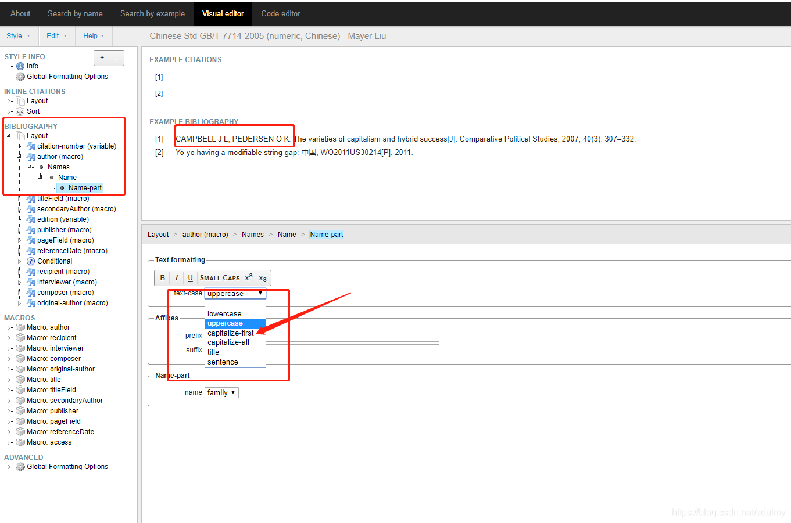

中文学位论文参考文献格式配置
mendeley引入并修改GB/T 7714-2005中文标准参考文献 ，解决人名全部大写问题
在
mendeley的菜单栏,View->Citation Style->More styles->Get More Stytles在出现的搜索框中搜索7714，点击China National Starndard GB/T 7714-2015 (number,Chinese)安装;在word中使用时发现英文人名都是大写的, 需要修改为首字母大写其余小写的人名样式: mendeley的菜单栏
View->Citation Style->More styles->Installed选中要修改的style->右键->Edit Stytle. 会进入网站页面。网页左边的层次图中
BIBLIOGARPHY> Layout > author (macro) > Names > Name > Name-part，在text-case中将原本的capitalize更换为capitalize-first,查看效果是否符合预期.

修改为首字母大写
- 修改完成,
Style > Save Style As..., 即可自动完成在软件中的安装. 同时也在Mendeley网站存储, 别人可以通过链接https://csl.mendeley.com/styles/617813421/china-national-standard-gb-t-7714-2015-numeric-Chenchuanglu安装该文件.